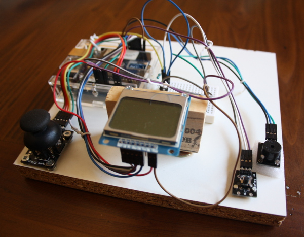
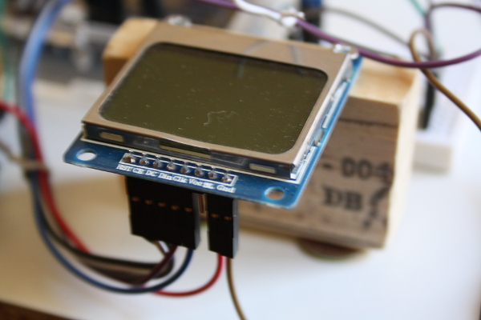
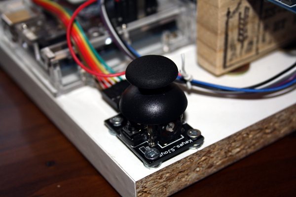
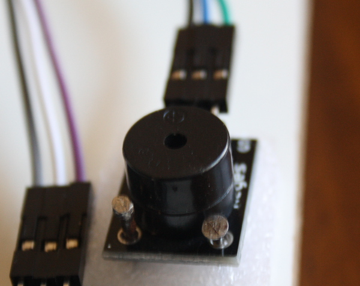

GAMEPAN
La Consola "Low Cost" basada en Arduino, by Fernando Paniagua (sin copyright) 2015

Origen y presupuesto
Lo primero que hice cuando descubrí la placa Arduino fue hacerme con una, comprar unos cuantos sensores y ponerme a probarlos. La experiencia era divertida, pero no me daba mucho juego. Hay muchos proyectos muy buenos y sofisticados con Arduino: riegos automáticos, detectores de intrusos o dispensadores de comida para peces, pero ninguno me estimulaba tanto como para ponerme a llevarlo a cabo... hasta que leí que la pantalla del teléfono Nokia 5110 (retroiluminada, monocromo y la friolera de 48 x 84 pixels de resolución) se podía conectar a la placa y, a través de unas librerías, utilizarlo como dispositivo de pantalla. Entonces surgió una idea: ¿por qué quedarse en hacer videojuegos si se puede hacer la consola? Estaba naciendo la Gamepan, la consola "low-cost".
El presupuesto (aproximado) ha sido el siguiente (comprado en tiendas online):
- Arduino + cable de alimentación USB: 6€
- Pantalla Nokia 5110: 3€
- Cables: 0,50€
- Carcasa (opcional): 2€
- Joystick analógico: 2€
- Módulo zumbador (altavoz): 1,75€
- Pulsador: 1€
- Tablero de conexiones (protoboard): 1,75€
- Resistencia: 0€
- Maderas, tornillos y clavos: 0€
En total unos 18€. Teniendo en cuenta que en mercado de segunda mano hay consolas Nintendo DS de la primera generación por menos de 20€, se puede afirmar que el que quiera esta consola para jugar está perdiendo dinero, ya que la calidad es discutible y de momento sólo tiene un juego disponible. Ahora bien, si lo que uno quiere es divertirse y aprender puede que sean de los 18€ mejor invertidos. Sobre todo si eres un chaval de entre 12 y 83 años y te gusta ver como funcionan las cosas.
Existen unas cuantas consolas basadas en Arduino. Son geniales, muy vistosas y tienen diseños muy cuidados. También tienen un buen puñado de juegos. Esta no es la mejor ni mucho menos, pero es mi preferida: LA GAMEPAN.
Bricolaje y tornillería
La parte de bricolaje no la voy a explicar porque, como se puede observar, Gamepan es una consola poco vistosa: un aglomerado, un pedazo de madera de una caja de vino, tornillos, arandelas y clavos. Un destornillador, algo de maña y saber que los martillazos en los dedos son dolorosos pero no mucho. Cada uno que se apañe como pueda.
Pantalla Nokia 5110 - Conexiones

- RST - Digital 3
- CE - Digital 4
- DC - Digital 5
- Din - Digital 6
- Clk - Digital 7v
- Vcc - Sin uso
- EL - 3.3V
- Gnd - GND
Joystick analógico - Conexiones

- SW - Digital 2
- VRy - ANALOG IN A1
- VRx - ANALOG IN A0
- +5V - 5V (pasando por una resistencia)
- GND - GND
Pulsador (de izquierda a derecha, poniendolo boca arriba y con los conectores hacia arriba) - Conexiones

- GND
- 5V (pasando por una resistencia)
- Digital 8
Zumbador (de izquierda a derecha, poniendolo boca arriba y con los conectores hacia arriba) - Conexiones

- Digital 9
- 5V (pasando por una resistencia)
- GND
Observaciones
Como hay que conectar varios elementos al mismo conector del Arduino, hay que utilizar la protoboard. En Internet hay información sobre qué es la protoboard y cómo utilizarla. Sobre el uso de las resistencias no tengo nada que decir: cogí una al azar y la alimentación de 5V pasa por ella. Quizás falten más resistencias o la que he utilizado no sea necesaria. Cuando algún experto en electrónica me asesore haré las modificaciones oportunas.
La alimentación de la placa Arduino se realiza a través de corriente de bajo voltaje (5V), por lo que no debería haber ningún peligro de descarga eléctrica. No obstante, si eres un chaval o chavala joven no hagas este proyecto tú sólo. Habla con tus padres o con tus profesores y que te echen una mano, que ya verás como están encantados de hacerlo. El martillo, en cambio, si es peligroso para los dedos, las mesas y para los azulejos de la cocina. ¡Cuidado! ;-)
Juegos
Gamepan en acción - Vídeo
(sin copyright) Fernando Paniagua, 2015